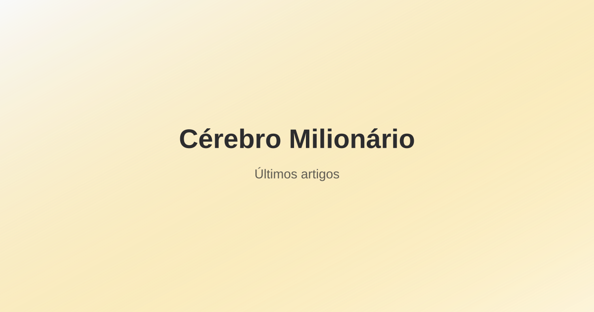

Os mercados emergentes concentram mais de 80% da população mundial, cerca de 40% do PIB global em paridade de poder de compra e algumas das economias com maior potencial de crescimento nas próximas décadas. O VWO é a forma mais barata e abrangente de acessar esse universo com um único instrumento: mais de 4.000 empresas em China, Índia, Taiwan, Brasil, África do Sul e dezenas de outros mercados em desenvolvimento, por apenas 0,07% ao ano.
Mas os emergentes não são todos iguais — e o VWO carrega riscos específicos que o investidor precisa entender antes de alocar. Este guia explica o que o fundo compra de fato, o que o "China A Inclusion" do índice significa na prática, como o VWO se compara ao EEM e ao IEMG, qual é a alocação correta para o investidor brasileiro (que já é um investidor em mercado emergente) e como tratar a tributação no Brasil.
O que é o VWO e o que ele compra
O Vanguard FTSE Emerging Markets ETF (VWO) replica o FTSE Emerging Markets All Cap China A Inclusion Index — um índice que reúne ações de grande, média e pequena capitalização de países classificados como mercados emergentes pela FTSE Russell. Com patrimônio sob gestão de aproximadamente US$ 75–80 bilhões, é um dos maiores ETFs de emergentes do mundo.
O que significa "China A Inclusion" no nome do índice
Essa é uma distinção que muitos guias ignoram mas que tem impacto real na composição. Historicamente, investidores estrangeiros só podiam comprar ações chinesas por meio das bolsas de Hong Kong (ações H) ou de ADRs americanos. As ações A — listadas nas bolsas de Shanghai e Shenzhen — eram restritas a investidores domésticos.
Com a criação do programa Stock Connect em 2014–2015, o acesso de estrangeiros às ações A foi liberado progressivamente. A FTSE Russell passou a incluir gradualmente essas ações no índice, concluindo o processo em fases entre 2019 e 2021. O resultado: o VWO agora inclui tanto as grandes holdings offshore como Tencent e Alibaba (listadas em Hong Kong e Nova York) quanto empresas domésticas chinesas de consumo, tecnologia e finanças que antes eram inacessíveis — dando uma exposição mais completa e fiel à real economia chinesa.
Composição geográfica (dezembro de 2025)
- China: 31,9%
- Taiwan: 22,8%
- Índia: 19,5%
- África do Sul: 4,3%
- Brasil: 4,2%
- Arábia Saudita: 3,3%
- México: 2,2%
- Malásia: 1,8%
- Outros: ~10%
China + Taiwan juntos respondem por mais de 54% da carteira. Isso é fundamental para entender o perfil de risco do VWO: ele é, em grande parte, um fundo de tecnologia asiática — TSMC domina Taiwan, e as grandes posições chinesas são principalmente de tecnologia, e-commerce e finanças.
As 10 maiores posições (dezembro de 2025)
- Taiwan Semiconductor Manufacturing Co. (TSMC) — 11,3%
- Tencent Holdings — 4,5%
- Alibaba Group — 3,1%
- HDFC Bank — 1,2%
- Reliance Industries — 1,1%
- Hon Hai Precision — 0,8%
- China Construction Bank — 0,8%
- Xiaomi — 0,8%
- PDD Holdings — 0,8%
- ICICI Bank — 0,7%
As 10 maiores posições somam 25,3% do total — mais concentrado que o VEA (10,4% no top-10), reflexo do peso desproporcional de China e Taiwan no universo de emergentes. TSMC sozinha representa 11,3% — praticamente um décimo de todo o fundo está numa única empresa.
Ficha técnica completa
- Ticker: VWO (NYSE Arca)
- Gestora: Vanguard Group
- Índice: FTSE Emerging Markets All Cap China A Inclusion Index
- Taxa de administração (TER): 0,07% ao ano
- AUM: ~US$ 75–80 bilhões
- Número de posições: ~4.000+ ações
- Dividend yield histórico: ~3,0%–3,5% ao ano
- Distribuição de dividendos: trimestral
- Lançamento: março de 2005
- Método de replicação: amostragem física
Composição setorial: mais tecnologia do que parece
O VWO não é um ETF de "economias em desenvolvimento genéricas". A composição setorial revela um fundo com peso significativo em tecnologia e financeiro:
- Tecnologia da informação: ~25–28% (dominado por TSMC, fabricantes de semicondutores e hardware)
- Financeiro: ~20–22% (bancos indianos, chineses e sul-africanos)
- Consumo discricionário: ~14–16% (Alibaba, PDD, montadoras asiáticas)
- Comunicações: ~10–12% (Tencent, Naspers)
- Energia: ~7–8% (Petrobras, Reliance, Saudi Aramco via ETF)
- Materiais: ~6% (Vale e mineradoras diversas)
A diferença mais marcante em relação ao VEA: onde o fundo de desenvolvidos tem peso em saúde europeia e industriais japoneses, o VWO é mais concentrado em tecnologia asiática e consumo digital. Isso gera perfis de risco e retorno distintos — e menor redundância ao combinar os dois fundos numa carteira.
VWO vs. EEM vs. IEMG: a comparação dos três principais ETFs de emergentes
| Característica | VWO (Vanguard) | EEM (iShares) | IEMG (iShares) |
|---|---|---|---|
| Índice | FTSE EM All Cap | MSCI EM | MSCI EM IMI |
| Taxa anual | 0,07% | 0,37% | 0,09% |
| Coreia do Sul | ❌ Exclui (FTSE = desenvolvida) | ✅ Inclui (MSCI = emergente) | ✅ Inclui (MSCI = emergente) |
| Small caps | ✅ Inclui | ❌ Exclui | ✅ Inclui |
| Nº de posições | ~4.000+ | ~1.000 | ~2.700 |
| AUM | ~US$ 78 bi | ~US$ 18 bi | ~US$ 72 bi |
Coreia do Sul: a diferença que poucos explicam. A FTSE Russell classifica a Coreia do Sul como mercado desenvolvido. O MSCI a classifica como emergente. Isso tem impacto direto: o VWO não inclui Samsung, SK Hynix nem Hyundai — que ficam no VEA. O IEMG e o EEM incluem essas empresas. Se você quer exposição à Coreia do Sul dentro da cota de emergentes, o IEMG é a alternativa mais eficiente em custo (0,09% vs 0,37% do EEM).
Para quem usa a combinação VTI + VEA + VWO, a Coreia do Sul fica no VEA — tudo consistente sob a classificação FTSE.
O caso de investimento nos mercados emergentes
Crescimento econômico superior e classe média em expansão
A Índia projeta crescimento de PIB de 6–7% ao ano na próxima década e deve ultrapassar o Japão como terceira maior economia do mundo. A China, mesmo desacelerando estruturalmente dos 10% dos anos 2000 para 4–5% hoje, ainda gera mais crescimento nominal em dólares do que a maioria das economias desenvolvidas. Indonésia, Vietnã, Bangladesh e México representam a próxima onda de industrialização com mão de obra competitiva.
O argumento do crescimento não é linear — o retorno dos mercados de capitais não acompanha mecanicamente o crescimento do PIB, especialmente quando as avaliações já descontam parte desse crescimento. Mas em horizontes muito longos, o crescimento econômico sustentado tende a se refletir na criação de valor para acionistas.
Valuations historicamente mais baixas
Em 2026, ações de mercados emergentes negociam com múltiplos de P/L entre 11 e 14 vezes — desconto substancial em relação ao S&P 500 (20–25 vezes). Parte desse desconto é justificada pelos riscos adicionais (regulatório, cambial, geopolítico). Mas parte também representa oportunidade de retorno para investidores com horizonte longo e tolerância à volatilidade.
Diversificação com correlação imperfeita
A correlação histórica entre o MSCI EM e o S&P 500 fica entre 0,60 e 0,75 em períodos normais — mais baixa que a correlação entre S&P 500 e mercados desenvolvidos (0,70–0,85). Isso significa que adicionar VWO a uma carteira com VTI ou VOO reduz a correlação e pode melhorar o perfil de risco-retorno. A correlação aumenta em crises severas (2008, 2020), mas o benefício de longo prazo se mantém.
Os riscos específicos dos mercados emergentes: sem eufemismos
Estes não são riscos teóricos — são eventos que já ocorreram e que ocorrerão novamente de formas diferentes.
Risco regulatório chinês: o episódio de 2021 ainda é recente
Entre 2021 e 2022, o governo chinês conduziu uma ofensiva regulatória que devastou setores inteiros. Tencent perdeu mais de 60% do valor de pico. Alibaba caiu mais de 70%. DiDi foi forçada a sair da bolsa americana meses após o IPO. TAL Education perdeu 90% em dias após proibição governamental das aulas pagas. Todo esse capital evaporou sem aviso prévio para investidores estrangeiros.
A China representa ~32% do VWO. Qualquer investidor no fundo está implicitamente aceitando que o governo chinês pode tomar decisões que destroem valor de acionistas minoritários por razões políticas e sociais — e que isso está fora do controle de qualquer análise fundamentalista.
Risco geopolítico Taiwan: a TSMC como epicentro
Taiwan representa ~23% do VWO e a TSMC sozinha é ~11%. A tensão no Estreito de Taiwan é estrutural e permanente desde 1949. A TSMC produz mais de 90% dos semicondutores mais avançados do mundo — um ativo estratégico de tal magnitude que qualquer conflito envolvendo Taiwan teria repercussões globais muito além dos mercados financeiros. Para um investidor no VWO, essa concentração não é abstrata: é o principal risco de cauda do portfólio.
Risco cambial multiplicado
Diferente de ETFs de mercados desenvolvidos — onde as moedas (euro, iene, libra) têm alguma estabilidade — nos emergentes, desvalorizações cambiais abruptas são frequentes. Real brasileiro, peso argentino, lira turca, rand sul-africano e rupia indiana têm todos histórico de quedas expressivas. Para o VWO, o retorno em dólar pode ser muito inferior ao retorno em moeda local durante períodos de stress cambial em vários países simultaneamente.
Risco de governança corporativa
Padrões de proteção ao acionista minoritário variam amplamente nos emergentes. Estruturas de controle familiar, golden shares governamentais (muito comuns em empresas estatais chinesas e brasileiras) e menor enforcement de regulação de mercado de capitais aumentam o risco de expropriação sutil ou explícita. Isso não impede o investimento — mas deve calibrar o peso na carteira.
A questão específica para o investidor brasileiro
Aqui está o ponto que a maioria dos guias sobre VWO ignora completamente: o investidor brasileiro já é um investidor em mercado emergente.
Seu salário é pago em real. Seus imóveis são ativos brasileiros. Seu Tesouro Direto e CDBs são títulos de um país emergente. Sua previdência privada provavelmente tem exposição à bolsa brasileira. Você já carrega todos os riscos de uma economia em desenvolvimento — câmbio volátil, risco fiscal, risco político — antes de comprar um único ETF.
O Brasil representa 4,2% do VWO. Ao comprar o fundo, você está aumentando ainda mais a correlação com o ciclo de risco global que já afeta o Brasil diretamente. Isso não invalida a compra — mas sugere uma alocação mais moderada em emergentes do que a proporção de mercado global sugere para um investidor americano ou europeu.
Alocação sugerida por perfil:
- Conservador: 0–5% do total em renda variável em VWO ou equivalente
- Moderado: 5–10% — captura o benefício de diversificação sem concentração excessiva
- Arrojado / longo prazo (20+ anos): 10–15% — aceita a volatilidade adicional em troca do potencial de retorno
Como posicionar VWO numa carteira global
O VWO funciona melhor como a terceira peça de uma carteira estruturada por blocos regionais:
- VTI (60%) + VEA (30%) + VWO (10%): Three-Fund Portfolio clássico, pesos próximos à capitalização de mercado global
- VT (100%): inclui emergentes automaticamente na proporção de mercado (~11%), sem necessidade de gestão separada — opção mais simples
- VTI (65%) + VEA (25%) + VWO (10%): versão com viés americano mais pronunciado, adequada para investidores com menor tolerância à volatilidade de emergentes
Tributação do VWO para o investidor brasileiro
Como qualquer ETF comprado no exterior, o VWO segue as regras de tributação de ativos internacionais no Brasil:
- Dividendos trimestrais: devem ser declarados no carnê-leão no mês do recebimento, tributados pela tabela progressiva do IRPF (podendo chegar a 27,5% dependendo da renda total do contribuinte)
- Ganho de capital na venda: tributação progressiva de 15% a 22,5% sobre o lucro. Sem isenção de valor mínimo — qualquer ganho é tributável
- Custo de aquisição: calculado em reais pela PTAX da data de compra. A variação cambial entre a data de compra e a data de venda também integra o cálculo do ganho tributável
- Declaração anual: o VWO deve constar na ficha "Bens e Direitos" com o código 74 (ações e ETFs no exterior)
Como comprar VWO do Brasil
O VWO é negociado na NYSE Arca e não está disponível na B3. Para comprá-lo, você precisa de corretora com acesso ao mercado americano.
- Nomad: plataforma em português, sem comissão de corretagem, câmbio acessível — ideal para quem está começando a investir no exterior
- Interactive Brokers: referência para investidores com capital maior, taxas mínimas por operação e acesso direto à NYSE Arca com relatórios fiscais automáticos
FAQ — Perguntas frequentes sobre o VWO ETF
VWO ETF vale a pena para investidor brasileiro?
Sim, com peso calibrado. O investidor brasileiro já carrega exposição natural a uma economia emergente — salário, imóveis, ativos domésticos. Adicionar VWO em excesso concentra ainda mais o risco em emergentes. Uma alocação de 5–10% do total da renda variável é razoável para a maioria dos perfis; 10–15% para quem tem horizonte de 20+ anos e alta tolerância à volatilidade.
Qual a diferença entre VWO e EEM?
A principal diferença é o custo: VWO cobra 0,07% ao ano vs 0,37% do EEM — mais de 5 vezes mais caro. O VWO também inclui small caps (~4.000 posições vs ~1.000 do EEM). Ambos usam índices que excluem a Coreia do Sul como emergente. Para investidores buy-and-hold de longo prazo, o VWO é estruturalmente superior pelo custo. O EEM tem liquidez maior e mercado de opções ativo — relevante apenas para traders.
O Brasil faz parte do VWO?
Sim, com peso de aproximadamente 4,2% (dez/2025), com empresas como Petrobras, Vale, Itaú e Bradesco. Isso significa que ao comprar VWO, o investidor brasileiro está aumentando ainda mais sua exposição ao Brasil — que já é alta de forma natural. Esse argumento justifica uma alocação moderada, não excessiva, no fundo.
O que significa "China A Inclusion" no índice do VWO?
O índice inclui tanto ações H (listadas em Hong Kong) quanto ações A (listadas nas bolsas de Shanghai e Shenzhen). As ações A representam empresas domésticas chinesas que antes eram inacessíveis a estrangeiros. A inclusão dá exposição mais completa à economia real chinesa — consumo interno, fintechs domésticas, manufatura — e não apenas às grandes holdings offshore.
Como fica a tributação do VWO para o investidor brasileiro?
Dividendos trimestrais entram no carnê-leão no mês do recebimento (tabela progressiva, até 27,5%). Ganho de capital na venda é tributado progressivamente de 15% a 22,5%, sem isenção de valor mínimo. O custo de aquisição é em reais pela PTAX da data de compra, e a variação cambial integra o cálculo do ganho tributável.
VWO ou IEMG: qual escolher?
Para investidores buy-and-hold, o VWO é marginalmente mais barato (0,07% vs 0,09%). A diferença prática mais relevante: o IEMG inclui a Coreia do Sul (Samsung, SK Hynix) porque o MSCI a classifica como emergente, enquanto o VWO a exclui (FTSE a classifica como desenvolvida, ficando no VEA). Se você usa a combinação VTI + VEA + VWO, a Coreia do Sul está coberta pelo VEA — sem lacuna. Se usa VTI + IEMG sem um fundo de desenvolvidos ex-US, o IEMG dá exposição a Korea que o VWO não daria.
Conclusão: VWO como complemento calculado, não aposta
O VWO ETF resolve um problema real de diversificação: acessar China, Índia, Taiwan, Brasil e mais de 40 outros mercados em desenvolvimento com uma única cota, a custo de 0,07% ao ano. Comparado ao EEM (0,37%), é cinco vezes mais barato para uma exposição similar.
Mas os emergentes exigem humildade. TSMC em 11% de uma posição é concentração relevante. China em 32% com risco regulatório documentado é um fator de risco que o investidor precisa aceitar conscientemente, não ignorar. Taiwan em 23% com tensão geopolítica estrutural não é diversificação — é uma aposta geopolítica embutida no portfólio.
Usado com o peso certo — tipicamente 5–15% da renda variável para a maioria dos perfis —, o VWO adiciona diversificação real com correlação suficientemente baixa para melhorar o perfil de risco da carteira global. Combinado com VTI e VEA, completa o Three-Fund Portfolio que cobre o mundo inteiro a custo mínimo. Para quem prefere simplicidade total, o VT já inclui emergentes na proporção de mercado sem necessidade de gestão separada.